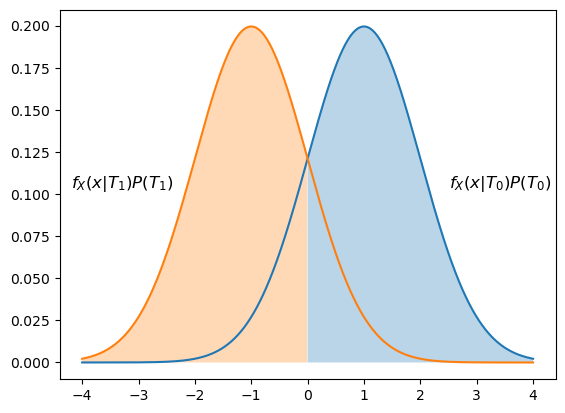
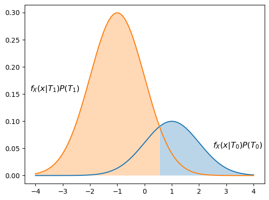
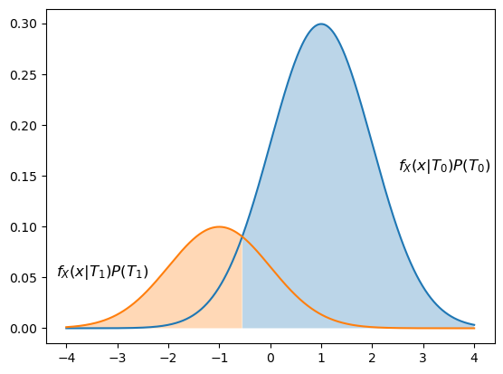
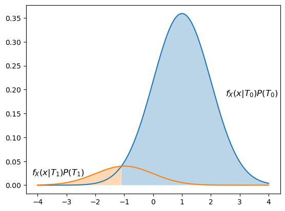

Optimal Bayesian Decision Making with Continuous Random Variables
Contents
import numpy as np
import numpy.random as npr
import scipy.stats as stats
def q(x):
return stats.norm.sf(x)
import matplotlib.pyplot as plt
%matplotlib inline
10.3. Optimal Bayesian Decision Making with Continuous Random Variables#
Consider a system in which the input can be characterized by a discrete set of input events \(A_i, i = 0,1, \ldots, n-1\) and where the output is a continuous random variable \(X\), where the distribution of \(X\) depends on the input event \(A_i\). In particular, the likelihoods are the conditional densities \(f_X(x|A_i)\) of the density of \(X\) at \(x\) given the input \(A_i\). Then the maximum a posteriori (MAP) decision rule chooses the input event \(A_i\) that maximizes the a posteriori probability \(P(A_i |X=x)\). Let \(\hat{A}_i\) denote the event that we choose input event \(A_i\). Then
Noting that \(f_X(x)\) does not depend on the input event \(A_i\), we can simplify that MAP rule as
where \(f_X(x)|A_i)\) is the likelihood of \(X\) under input event \(A_i\), and \(P(A_i)\) is the a priori probability of \(A_i\).
Note that for the case of equal a priori probabilities, we can eliminate the term \(P(A_i)\) from the MAP rule (since it is the same for every \(A_i\)), yielding the rule
which is a maximum likelihood (ML) rule.
Example
Consider again the binary communication system introduced in Section 8.9, for which the output \(X\) is conditionally Gaussian given the input. Here,
where \(A_i\) denotes the event that \(i\) is transmitted.
Since we have only two possible inputs, the MAP rule can be simplified to a single comparison. We will decide \(\hat{A}_0\) if \(A_0\) maximizes
and decide \(\hat{A}_1\) otherwise.
The comparison is between weighted likelihoods, where the likelihoods are Normal pdfs with the same variance but different means, and the weights are the a priori probabilities of the inputs. Noting that \(P(A_1) = 1 -P(A_0)\), we can create a function that draws the weighted likelihoods for a given value of \(P(A_0)\) and a given value of \(\sigma\). In addition, the function uses different colors to illustrate which weighted density is greater; in other words, the colors indicate the MAP decision regions. Although we have not shown it yet, the MAP decision region in this scenario can be characterized using a single decision threshold, and the value of that threshold is determined (approximately) by finding the smallest value of \(x\) such that the weighted density \(f_X(x|A_0)P(A_0)\) is greater than \(f_X(x|A_1)P(A_1)\).
def drawMAP(p0,sigma=1):
''' Draw the weighted densities for the binary communication system problem
and shade under them according to the MAP decision rule.
Inputs:
p0= probability that 0 is transmitted
sigma2= variance of the Gaussian noise (default is 1)'''
# Set up random variables
G0 = stats.norm(loc = 1, scale = sigma)
G1 = stats.norm(loc = -1, scale = sigma)
x=np.linspace(-4,4,1001)
p1=1-p0
# plot the weighted densities:
# these are proportional to the APPs
plt.plot(x,p0*G0.pdf(x))
plt.plot(x,p1*G1.pdf(x))
# Add labels
plt.annotate('$f_X(x|T_0)P(T_0)$', (2.5,1.6*p0*G0.pdf(2.5)), \
fontsize=12)
plt.annotate('$f_X(x|T_1)P(T_1)$', (-4.2, 1.6*p1*G1.pdf(-2.5)), \
fontsize=12);
# Determine the regions where the APP for 0 is
# bigger and the APP for 1 is bigger
R0=x[np.where(p0*G0.pdf(x)>= p1*G1.pdf(x))]
R1=x[np.where(p0*G0.pdf(x)< p1*G1.pdf(x))]
# Fill under the regions found above
plt.fill_between(R0,p0*G0.pdf(R0),alpha=0.3)
plt.fill_between(R1,p1*G1.pdf(R1),alpha=0.3)
# Print the MAP threshold
print("MAP decision threshold is",round(R0[0],2))
The weighted densities, MAP decision regions, and the decision threshold for equal a priori probabilities is shown below. Note that this corresponds to the ML decision rule. Since the weighted densities are symmetric around 0, the ML decision threshold is 0. The decision rule is:
Here we have arbitrarily assigned the point \(x=0\) to \(\hat{A}_0\), but it does not matter which decision region it is assigned to – any individual point has zero probability of occurring.
drawMAP(0.5)
MAP decision threshold is 0.0

If we decrease \(P(A_0)\) to 0.25, we get the weighted densities shown below. The decision threshold is now 0.55, and the decision rule is
Note that more of the real axis is assigned to the decision \(\hat{A}_1\), which makes sense since \(A_1\) is more likely to have been sent.
drawMAP(0.25)
MAP decision threshold is 0.55

If we instead let \(P(A_0)=0.75\), the opposite effect occurs. The decision rule is
and more of the real line is assigned to the decision \(\hat{A}_0\).
drawMAP(0.75)
MAP decision threshold is -0.54

As we increase \(P(A_0)\) further, the decision region moves further toward the left:
drawMAP(0.9)
MAP decision threshold is -1.1

10.3.1. Analytical Value of the Decision Threshold#
Note that in each of the figures above, the decision threshold is the value for which the weighted densities are equal. We can use analysis to find the value of that threshold, \(\gamma\) in terms of \(P(A_0)\) and \(\sigma\).
Let’s first consider the decision threshold for the ML decision rule. Let’s solve this for an arbitrary choice of means of the conditional Normal distributions; when \(A_i\) is true, let the mean be \(\mu_i\). Then
Thus, the ML decision threshold is the average of the means.
The MAP decision threshold can be found by solving for equality between the weighted densities, where the weights are the a priori probabilities. The details of the algebraic manipulation are omitted, but the resulting expression is
Let’s interpret this threshold for the case that \(\mu_0 > \mu_1\). If \(P_1 > P_0\), then ratio \(P_1/P_0 >1 \) and the logarithmic term is greater than 0. Since \(\mu_0 - \mu_1>0\) under our assumption, the decision threshold moves to the right, and the MAP region for deciding \(\hat{A}_1\) is bigger. Conversely, if \(P_1 < P_0\), then the logarithm term will be negative, and the MAP decision threshold will move to the left, increasing the decision region for \(\hat{A}_0\). The effect of the a priori information increases with \(\sigma^2\). In other words, the more noisy the observation is, then the more we should rely on the a priori information.